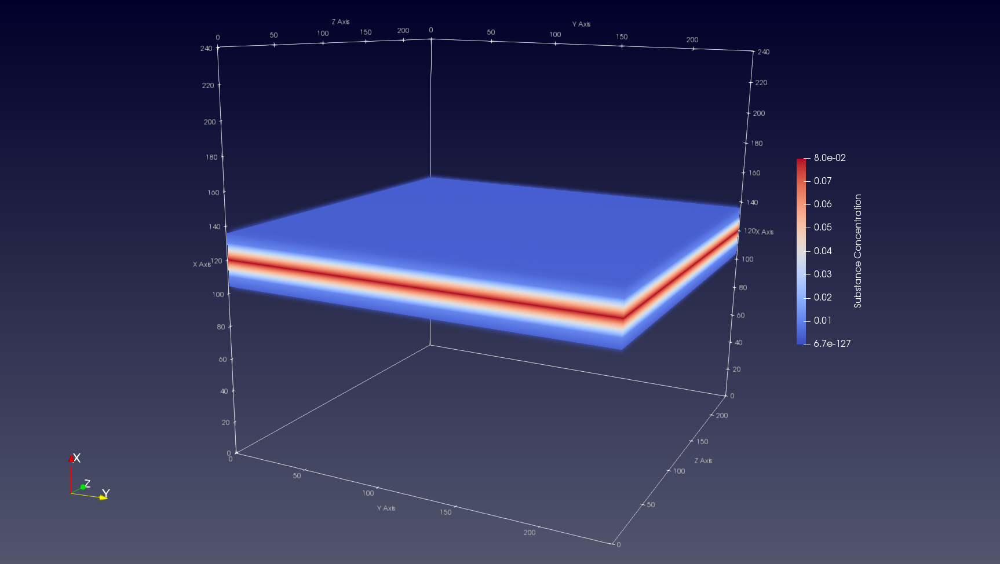

Substance Initialization
You might want to initialize the concentration of one or more of the substances in your simulation. In this tutorial we shal take a look on how to do so.
Tutorial by example
Go into the test/integration directory and open the source file
substance_initialization.h in your favorite editor.
1. List the substance(s)
We start the code of by listing the s we will use in our simulation in an enum data structure. In this example we just create one substance.
enum Substances { kSubstance };
2. Specify the space dimensions
We bound our space to keep things simple.
Param::bound_space_ = true; Param::min_bound_ = 0; Param::max_bound_ = 250;
3. Create a cell
We create one cell with diameter 10, at a random location
auto construct = [](const Double3& position) { Cell* cell = new Cell(position); cell->SetDiameter(10); return cell; }; ModelInitializer::CreateCellsRandom(Param::min_bound_, Param::max_bound_, 1, construct);
4. Define the substance(s)
We define the diffusion parameters of the substance(s) in our simulation. We choose a diffusion coefficient of 0.5, a decay constant 0f 0.1 and a resolution of 1.
ModelInitializer::DefineSubstance(kSubstance, "Substance", 0.5, 0.1, 1);
5. Initialize the substance(s)
Now comes the most important part of the tutorial: initializing our substance(s)
concentration values throught the space. We will use the function
ModelInitializer::InitializeSubstance for this purpose.
ModelInitializer::InitializeSubstance(kSubstance, "Substance", GaussianBand(120, 5, Axis::kXAxis));
Let's break this down. We first pass the substance enum id and name in the function in order to specify which substance we want to initialize. Then we simply pass the model we want to initialize the substance with (we call these "initializers"). In this case we choose for a GaussianBand with a mean value of 120 along the x-axis, and a variance of 5.
The result (visualized with ParaView) is the following:

Creating a custom substance initializer
In this tutorial you have seen how to initialize a substance's concentration
values with the GaussianBand initializer. Of course this is not the only
model to initialize a substance with. We have several predefined initializers
available in BioDynaMo, and you can create your own.
Let's take a look at an existing substance initializer.
Option 1: Functors
struct GaussianBand { double mean_; double sigma_; uint8_t axis_; GaussianBand(double mean, double sigma, uint8_t axis) { mean_ = mean; sigma_ = sigma; axis_ = axis; } double operator()(double x, double y, double z) { switch(axis_) { case Axis::kXAxis: return ROOT::Math::normal_pdf(x, sigma_, mean_); case Axis::kYAxis: return ROOT::Math::normal_pdf(y, sigma_, mean_); case Axis::kZAxis: return ROOT::Math::normal_pdf(z, sigma_, mean_); default: throw std::logic_error("You have chosen an non-existing axis!"); } } };
The above code is what is called a 'functor' in C++. Here it basically describes the model or operation that you want to perform on the entire diffusion space. In the constructor we save the mean, variance and orientation axis, so that this initializer can be used generically. The operator tells BioDynaMo what the concentration value should be for x, y, and z. BioDynaMo will make sure that your operator is executed over the whole simulation space. In this example we make use of a function that models the normal (i.e. Gaussian) probability density function.
Option 2: Lambdas
Functors are nice if you want to create a generic model that you can apply for several input variables (e.g. different means, sigmas in the above example). But you might want to just keep it short and simple; in which case lambdas are nice to use. We can accomplish exactly the same result as the above example with the following lambda:
auto gaussian_band = [](double x, double y, double z) { return ROOT::Math::normal_pdf(x, 5, 120); };
Much simpler right? As you can see we have hard-coded some of the variables that we had generalized in our functor. So depending on your use case or preference, lambdas might be the way to go.